Appendix D — Git references
Throughout this tutorial, we have used names such as main, origin/main, and HEAD to identify commits without having to specify their commit IDs. These names are examples of Git references. In this appendix, we will take a closer look at what Git references are and how they work. This will help us better understand what happens when we perform some of the Git operations introduced throughout the tutorial.
This appendix assumes that the reader is familiar with branches and remote repositories, which were introduced in Chapter 6 and Chapter 7.
D.1 What are Git references?
Git identifies the objects stored in a Git repository using object IDs. Throughout this tutorial, we have already encountered one type of object ID, namely the commit ID. However, remembering and specifying these IDs whenever we wish to identify particular objects would be inconvenient. Instead, Git allows us to assign meaningful names to objects using references.
A Git reference is a name that points to either a Git object or another reference. Git references allow us to identify objects without having to specify their object IDs. Most of the references that we have encountered throughout this tutorial are used to identify commits.
For example, the branch name main is a reference that points to the last commit on the main branch. When we use main instead of a commit ID in a Git command, Git determines which commit the reference points to.
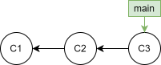
main points to commit C3
An important distinction between objects and references is that a reference can be changed to point to a different object without modifying either object. Furthermore, several references can point to the same object.
Git can store references as individual files in the .git/refs/ directory. For example, the branch reference main may be stored in a file named .git/refs/heads/main. We can examine the contents of this file using cat:
$ cat .git/refs/heads/main af340cf8c95f55df3ab4cce9c102e01393631634
As we can see, the file simply contains the ID of the commit that the branch reference points to.
However, Git does not necessarily store references as individual files. We can instead use git show-ref to display references whose full names begin with refs/, along with their associated object IDs, regardless of how the references are stored. Note that the output of git show-ref does not include HEAD by default. We will examine the HEAD reference separately later in this appendix.
Consider the commit history shown below:
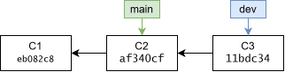
If we examined the references in this repository using git show-ref, we would get the following output:
$ git show-ref 11bdc34a7e8c4b3b3467f3d982607cf1f6420498 refs/heads/dev af340cf8c95f55df3ab4cce9c102e01393631634 refs/heads/main
Each line of the output contains an object ID followed by the full name of the corresponding reference. In this example, the branch references dev and main point to two different commits. Note that the output contains the full names of the references, refs/heads/dev and refs/heads/main, rather than the shorter names dev and main that we normally use when working with branches. The commit ID associated with refs/heads/main is the same as the one that we previously obtained by examining the contents of the .git/refs/heads/main file.
As we will see in the following sections, the prefixes in the full names of many references indicate the type of reference.
D.2 Branch references
When we work with branches in Git, it may be tempting to think of each branch as a separate collection of commits. However, a branch is essentially a reference that points to the last commit on the branch. This commit is also referred to as the tip of the branch. Since a branch reference can be updated to point to another commit, branches in Git are often described as movable pointers to commits. Git can determine the history of the branch by following the parent relationships between commits, starting at the commit that the branch reference points to.
The full name of a branch reference consists of the prefix refs/heads/ followed by the name of the branch. For example, the full name of the reference for the main branch is refs/heads/main.
When we create a new branch, Git creates a new branch reference that points to an existing commit. No commits are created or copied as a result of creating the branch. This is why creating a branch in Git is a very fast operation, even in repositories with an extensive commit history.
Suppose that we have a repository containing a branch named main whose history consists of three commits. If we create a new branch named dev at the last commit on the main branch, both branch references will initially point to the same commit.
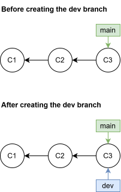
If we subsequently switch to the dev branch and create a new commit, Git updates the dev reference to point to the newly created commit. The main reference remains unchanged.
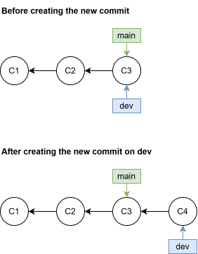
dev branch
A branch reference can also be moved to an existing commit. For example, this happens when we perform a fast-forward merge or use git reset to change the current commit while on a branch.
The distinction between a branch reference and the commits that constitute the history of the branch is also important when deleting branches. When we delete a branch, Git removes the branch reference, but it does not immediately remove any of the commits that were part of the history of the branch.
Suppose that we switch back to the main branch and forcibly delete the dev branch in the example above.
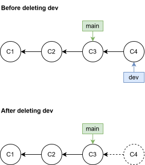
dev branch
Although commit C4 is no longer part of the history of any branch, the commit object still exists in the repository. This is why it is often possible to recover commits that we have seemingly lost, for example by using reflogs, as described in Chapter 11.
Git may eventually remove commit objects that can no longer be reached through references or reflogs, but deleting a branch reference does not immediately remove these objects.
D.3 The HEAD reference
Throughout this tutorial, we have used HEAD to identify the current commit. However, unlike a branch reference, HEAD does not normally point directly to a commit. Instead, it points to the reference for the current branch.
A reference that points to another reference rather than directly to a Git object is called a symbolic reference.
For example, if we are currently on the main branch, HEAD points to the branch reference refs/heads/main, which in turn points to a commit. Consequently, HEAD identifies the current commit indirectly through the branch reference.
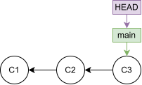
HEAD as a symbolic reference
We can inspect the HEAD reference by displaying the contents of the .git/HEAD file. For example, if we are currently on the main branch, the contents of this file will typically be as follows:
$ cat .git/HEAD ref: refs/heads/main
The prefix ref: indicates that HEAD is a symbolic reference, and refs/heads/main is the full name of the reference that it points to.
We can also include HEAD in the output of git show-ref by using the --head option. However, unlike the contents of the .git/HEAD file, the output of git show-ref --head does not reveal whether HEAD identifies the current commit directly or indirectly. For HEAD, it only shows the ID of the current commit.
$ git show-ref --head af340cf8c95f55df3ab4cce9c102e01393631634 HEAD 11bdc34a7e8c4b3b3467f3d982607cf1f6420498 refs/heads/dev af340cf8c95f55df3ab4cce9c102e01393631634 refs/heads/main
The output shows that HEAD and refs/heads/main identify the same commit, but it does not reveal the relationship between the two references.
Understanding this relationship between HEAD and branch references helps explain what happens when we switch branches and create commits.
When we switch to another branch, Git updates HEAD to point to the reference for that branch and updates the contents of the staging area and the working tree as needed. The branch references themselves remain unchanged.
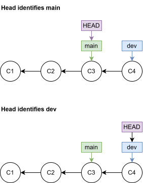
When we create a new commit while on a branch, Git updates the reference for the current branch to point to the newly created commit. HEAD continues to point to the same branch reference and thereby identifies the newly created commit indirectly.
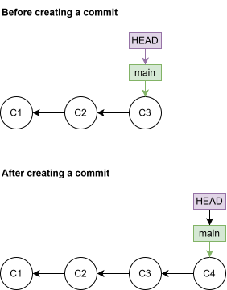
Thus, although the current commit changes when we create a new commit while on a branch, HEAD itself remains unchanged.
Detached HEAD
Although HEAD normally points to a branch reference, it can also point directly to a commit. When this is the case, we are said to be in a detached HEAD state.
We can enter a detached HEAD state by using git switch --detach <commit>, which allows us to switch to a particular commit rather than to a branch.
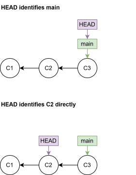
HEAD
In a detached HEAD state, the .git/HEAD file contains a commit ID rather than the name of a branch reference, as shown below:
$ cat .git/HEAD d8a31c27bf04e95a619d36c852fd0ab7e1439c65
In a detached HEAD state, there is no current branch, but there is still a current commit. If we create a new commit, Git updates HEAD to point directly to the newly created commit rather than updating a branch reference.
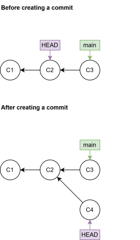
If we subsequently switch to an existing branch, HEAD once again points to a branch reference. The commit that we created in the detached HEAD state may then be difficult to find, since it may not be part of the history of any branch.
If we wish to continue working from a commit created in a detached HEAD state, we can create a new branch at that commit and switch to it. HEAD will then point to the newly created branch reference rather than directly to the commit.
D.4 Remote-tracking branches
Like local branch references, remote-tracking branch references point to commits. However, a remote-tracking branch records the last known state of a branch in a remote repository. For example, the remote-tracking branch origin/main records the last known state of the main branch in the remote repository associated with origin.
The full name of a remote-tracking branch reference consists of the prefix refs/remotes/ followed by the name of the remote-tracking branch. For example, the full name of the reference for origin/main is refs/remotes/origin/main.
It is important to distinguish between the main branch in the remote repository and the remote-tracking branch origin/main in the local repository. Both the origin/main reference and the commit that it points to are stored in the local repository. Consequently, changes to the main branch in the remote repository are not necessarily reflected in origin/main.
Suppose that we have cloned a remote repository whose default branch is main. The history of the main branch consists of three commits. Immediately after cloning the repository, the main branch and the remote-tracking branch origin/main in the local repository point to the same commit. If a new commit is subsequently created on the main branch in the remote repository, neither of these references in the local repository will be automatically updated.
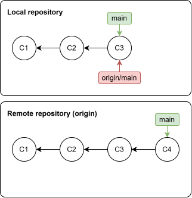
When we fetch changes from the remote repository using git fetch, Git retrieves the new commit and updates the remote-tracking branch reference origin/main to point to it. However, the main branch in the local repository remains unchanged.
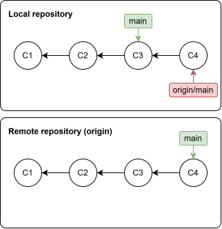
Thus, local branch references are updated when we, for example, create commits on the corresponding branches. Remote-tracking branch references are instead typically updated when we fetch changes from or successfully push changes to the corresponding branches in remote repositories.
D.6 Identifying commits using references
Throughout this tutorial, we have used both commit IDs and Git references to identify particular commits. We can also identify commits relative to other commits using expressions such as HEAD^ and HEAD~2.
Although we have primarily used these expressions in combination with HEAD, we can also use them in combination with other references, such as branch references and tags.
For example, the following table shows different ways of identifying commits using the main branch reference.
| Expression | Commit identified |
|---|---|
main |
The last commit on the main branch. |
main^ |
The first parent of the commit that main points to. |
main~1 |
The first parent of the commit that main points to. |
main~2 |
The commit reached by following the first parent twice from the commit that main points to. |
main~3 |
The commit reached by following the first parent three times from the commit that main points to. |
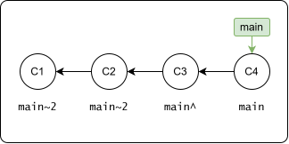
main branch reference
It is useful to distinguish between references, such as main and HEAD, and expressions that use these references, such as main^ and HEAD~2. These expressions are not themselves references but are evaluated by Git to identify particular commits.
For example, when we use main~2 in a Git command, Git first determines which commit the main reference points to and then follows the first parent twice to identify the requested commit.
When a Git command accepts a commit ID as an argument, we can generally use one of these expressions instead. For example, we can use git diff main~2 main to compare the versions of files in the commits identified by main~2 and main.
Git supports many other expressions for identifying commits. We can find a more comprehensive description of these expressions in the manual page accessed using git help revisions.
D.7 Summary
Git references provide meaningful names that point to Git objects or other references. References can be changed to point to different objects without modifying the objects themselves.
In this appendix, we have examined the following types of Git references:
Branch references point to the last commit on a branch. They are updated when new commits are created on the corresponding branches and can also be moved to existing commits.
HEADnormally points to the reference for the current branch and thereby identifies the current commit indirectly. In a detached HEAD state,HEADpoints directly to the current commit.Remote-tracking branch references record the last known state of branches in remote repositories.
Tags are typically used to identify particular commits in the history of a repository and are not automatically updated when new commits are created.
The following table shows examples of the short and full names of the references that we have examined in this appendix and summarizes what the different types of references point to.
| Type of reference | Short name | Full name | Points to |
|---|---|---|---|
| Branch | main |
refs/heads/main |
A commit |
| HEAD | HEAD |
HEAD |
A branch reference or a commit |
| Remote-tracking branch | origin/main |
refs/remotes/origin/main |
A commit |
| Lightweight tag | v1.0 |
refs/tags/v1.0 |
A Git object |
| Annotated tag | v2.0 |
refs/tags/v2.0 |
A tag object |
We have also used git show-ref to display references and their associated object IDs and examined the contents of the .git/HEAD file to determine whether HEAD points to a branch reference or directly to the current commit.
Git references can also be used in expressions such as HEAD^ and main~2 to identify commits relative to those identified by the references.
D.8 Exercises
Exercise 1 - Investigating Git references
The purpose of this exercise is to investigate how some of the Git operations introduced throughout this tutorial affect the references in a Git repository.
Throughout the exercise, try to predict how the references in the repository will change before performing each Git operation. Compare your predictions with the output of the commands that you use to examine the references.
Step 1.
Use the following commands to create a new Git repository named ex01-git-references, create a file named file1.txt containing a single line of text, stage the file, and create a commit:
$ mkdir ~/ex01-git-references $ cd ~/ex01-git-references $ git init $ echo "Line 1" > file1.txt $ git add file1.txt $ git commit -m "Add file1.txt"
Use git show-ref and cat .git/HEAD to examine the references in the repository.
Which references can we learn about from the output of the two commands?
How does
HEADidentify the current commit?
Step 2.
Create a new branch named dev without switching to it. Use the same commands as in step 1 to examine the references in the repository.
Which reference has been created?
Which commit does the reference point to?
Has
HEADchanged?
Step 3.
Switch to the dev branch and examine the references in the repository again.
Which references have changed as a result of switching branches?
Has the current commit changed?
Step 4.
Add another line of text to file1.txt, stage the changes, and create a commit. Examine the references in the repository again.
Which references have changed as a result of creating the commit?
Has the current commit changed?
Has
HEADitself changed?
Step 5.
Create a lightweight tag named v1.0 that points to the current commit. Add another line of text to file1.txt, stage the changes, and create another commit. Show the commit history and examine the references in the repository again.
Which commit does the
v1.0tag point to?Which commit does the
devbranch reference point to?
Step 6.
Use git switch --detach v1.0 to switch to the commit that the v1.0 tag points to. Examine the references in the repository again.
How does
HEADnow identify the current commit?Have any of the branch or tag references changed?
Step 7.
Add another line of text to file1.txt, stage the changes, and create a commit. Show the commit history using git log --oneline --graph --all and examine the references in the repository again.
Which references have changed as a result of creating the commit?
How does this differ from what happened when we created a commit in step 4?
Step 8.
Create a new branch named feature at the current commit and switch to it. Examine the references in the repository again.
How does
HEADnow identify the current commit?Has the current commit changed?
Exercise 2 - Interpreting Git references
The following figure illustrates the commits and references in a Git repository.
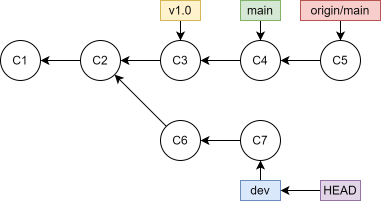
Answer the following questions based on the figure. Assume that each question refers to the original state of the repository illustrated in the figure. When describing changes to references, consider only those shown in the figure.
- What are the current branch and the current commit? How does
HEADidentify the current commit?
- Which references would change if we switched to the
mainbranch? Which commit would then be the current commit?
- Which references would change if we created a new commit without first switching branches?
- Suppose that we switched to the
mainbranch and performed a fast-forward merge oforigin/mainintomain. Which references would change? Would any new commit objects be created?
- Which references would change if we used
git resetto change the current commit to C6? Would any commit objects be immediately removed from the repository?
- Suppose that we switched to the
mainbranch and forcibly deleted thedevbranch. Which references would change or be removed? Would any commit objects be immediately removed from the repository?
- Does the remote-tracking branch
origin/maintell us with certainty which commit themainbranch in the remote repository currently points to? Explain your answer.
- Suppose that we used
git switch --detach v1.0to switch to the commit identified by thev1.0tag. Which references would change? Which commit would then be the current commit?
- Which commits are identified by the expressions
main^,dev~2,origin/main~2, andHEAD^?